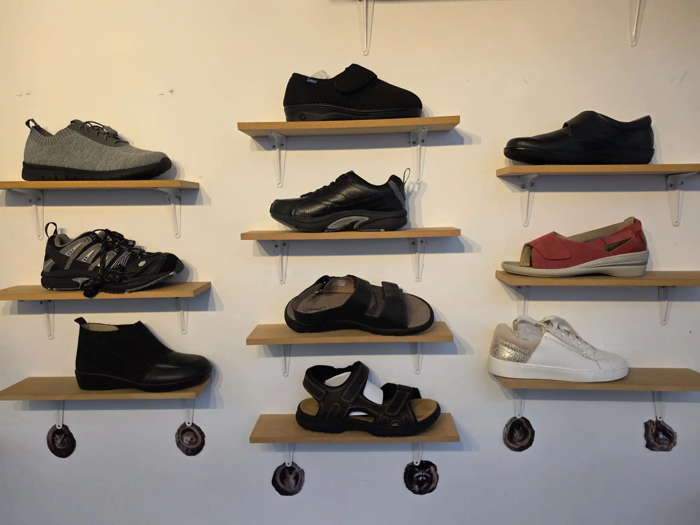
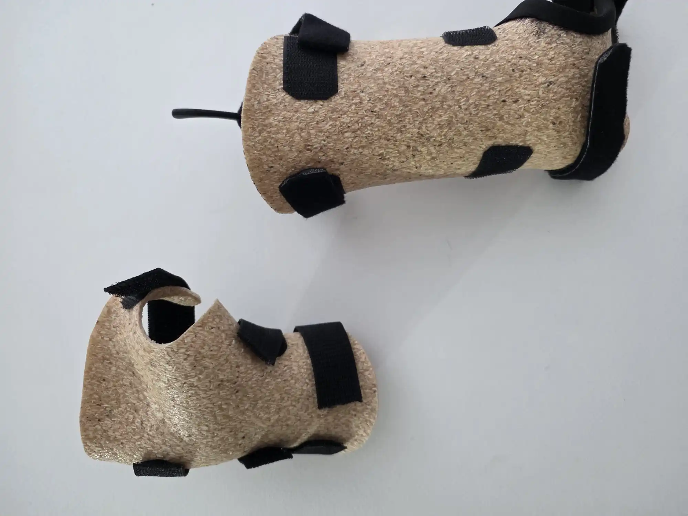

Qu'est-ce que l'appareillage de série ?
L’appareillage de série regroupe l’ensemble des dispositifs orthopédiques préfabriqués et immédiatement disponibles. Contrairement au sur-mesure, ces produits existent en différentes tailles standardisées conçues pour s'adapter à la majorité des morphologies.
Au cabinet, nous sélectionnons pour vous les meilleurs modèles parmi nos partenaires fabricants. Notre rôle est de vous conseiller, de réaliser les mesures nécessaires pour choisir la taille idéale et d'effectuer les essayages afin de garantir un positionnement thérapeutique efficace et confortable.

Nos dispositifs et indications
L'orthopédie de série permet de traiter de nombreuses pathologies courantes nécessitant une immobilisation partielle, un soutien articulaire ou une compression.
Attelles de genou et genouillères (entorses)
Chevillères de maintien et de sport
Colliers cervicaux (douleurs et traumatismes)
Bottes de marche post-opératoires
Écharpes de bras et épaulières
Orthèses de poignet et de pouce de série
